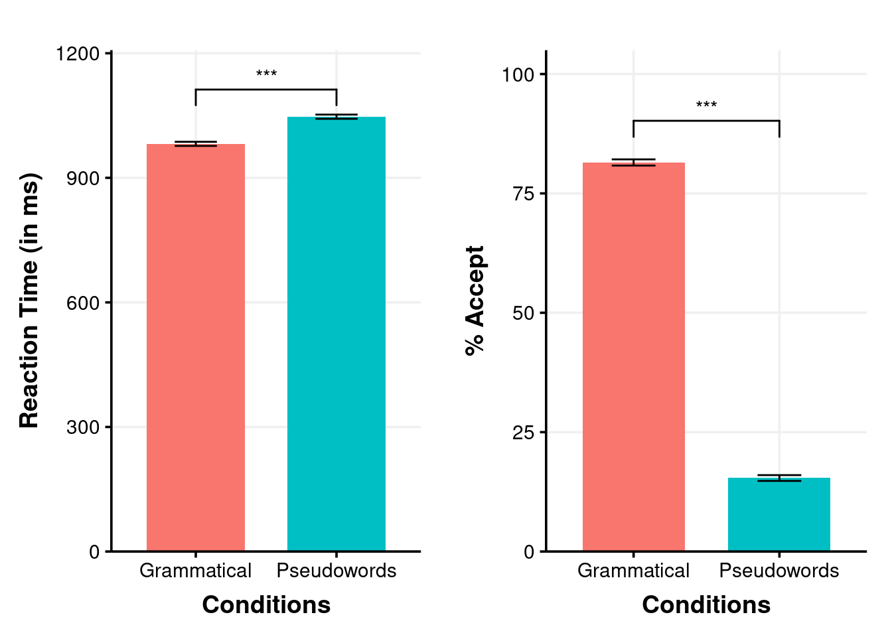
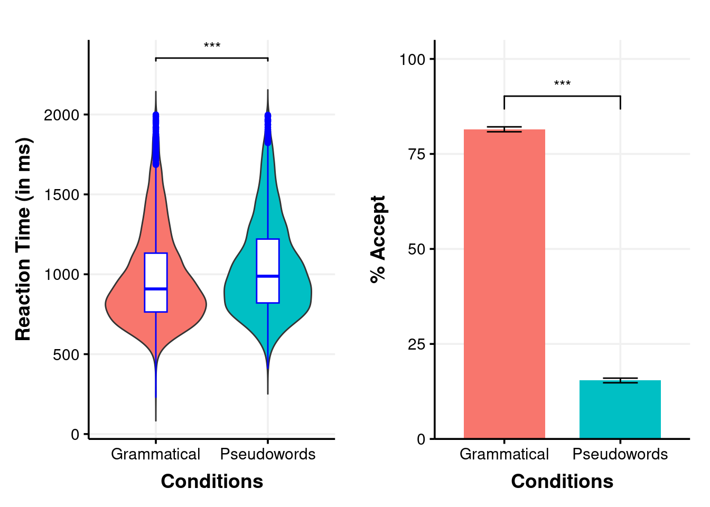

library(lme4)
library(glmm)
library(tidyverse)
library(ggplot2)
library(trimr)
require(car)
require(lattice)
require(itsadug)
library(ggpubr)
library(effects)
library(sjPlot)
library(effectsize)
library(trimr)
library(taylor)
library(plotrix)
library(gridExtra)
library(ggthemes)
library(lmerTest)
library(modelsummary)
library(report)
source('ggplot_theme_Publication-2.R')MEG_Behavioural_Analysis
Data
Behavioural dataset for the lexical decision task performed during MEG recording.
data = read_csv(file = 'MEG_Behavioural_data.csv')BAN_data_plot<-data %>%group_by(Cond_Type)%>%summarise(
MeanResponse=mean(as.numeric(Response))*100,
SD_Response = sd(as.numeric(Response))*100,
SE_Response = std.error(as.numeric(Response))*100,
MeanRT=mean(RT),
SD_RT = sd(RT),
SE_RT=std.error(RT),
MeanACC=mean(ACC)*100,
SD_ACC = sd(ACC)*100,
SE_ACC=std.error(ACC)*100)BAN_data <- data %>%
mutate(
Participant = as.factor(Participant),
Prefix = as.factor(Prefix),
Condition = as.factor(Condition),
Item = as.factor(Item.no),
Cond_Type = as.factor(Cond_Type),
Response = as.factor(Response)
)str(BAN_data)tibble [7,108 × 9] (S3: tbl_df/tbl/data.frame)
$ Participant: Factor w/ 24 levels "B0001","B0002",..: 21 21 21 21 21 21 21 21 21 21 ...
$ Item.no : num [1:7108] 301 45 228 295 270 53 43 269 303 294 ...
$ Prefix : Factor w/ 3 levels "duh","fill","proti": 3 1 3 1 3 1 3 1 1 1 ...
$ Condition : Factor w/ 4 levels "CatViol","Filler",..: 4 1 3 4 4 1 1 4 4 4 ...
$ Cond_Type : Factor w/ 2 levels "Grammatical",..: 2 2 1 2 2 2 2 2 2 2 ...
$ RT : num [1:7108] 845 1085 1201 1710 1759 ...
$ ACC : num [1:7108] 1 1 1 1 1 0 0 1 1 0 ...
$ Response : Factor w/ 2 levels "0","1": 1 1 2 1 1 2 2 1 1 2 ...
$ Item : Factor w/ 304 levels "1","2","3","4",..: 301 45 228 295 270 53 43 269 303 294 ...BAN_RT_model_1 <- lmer(RT ~ Cond_Type + (1|Participant) + (1|Item), data = BAN_data, REML = F)
BAN_RT_model_2 = lmer(RT ~ (1|Participant) + (1|Item), data = BAN_data, REML = F)anova(BAN_RT_model_1,BAN_RT_model_2)Data: BAN_data
Models:
BAN_RT_model_2: RT ~ (1 | Participant) + (1 | Item)
BAN_RT_model_1: RT ~ Cond_Type + (1 | Participant) + (1 | Item)
npar AIC BIC logLik deviance Chisq Df Pr(>Chisq)
BAN_RT_model_2 4 98874 98901 -49433 98866
BAN_RT_model_1 5 98845 98879 -49417 98835 31.255 1 2.263e-08 ***
---
Signif. codes: 0 '***' 0.001 '**' 0.01 '*' 0.05 '.' 0.1 ' ' 1summary(BAN_RT_model_1)Linear mixed model fit by maximum likelihood . t-tests use Satterthwaite's
method [lmerModLmerTest]
Formula: RT ~ Cond_Type + (1 | Participant) + (1 | Item)
Data: BAN_data
AIC BIC logLik deviance df.resid
98844.5 98878.9 -49417.3 98834.5 7103
Scaled residuals:
Min 1Q Median 3Q Max
-3.5272 -0.6651 -0.1845 0.4935 4.7073
Random effects:
Groups Name Variance Std.Dev.
Item (Intercept) 7458 86.36
Participant (Intercept) 23346 152.79
Residual 59418 243.76
Number of obs: 7108, groups: Item, 304; Participant, 24
Fixed effects:
Estimate Std. Error df t value Pr(>|t|)
(Intercept) 986.27 32.23 26.87 30.606 < 2e-16 ***
Cond_TypePseudowords 65.84 11.47 302.68 5.739 2.31e-08 ***
---
Signif. codes: 0 '***' 0.001 '**' 0.01 '*' 0.05 '.' 0.1 ' ' 1
Correlation of Fixed Effects:
(Intr)
Cnd_TypPsdw -0.178coef(summary(BAN_RT_model_1)) Estimate Std. Error df t value Pr(>|t|)
(Intercept) 986.2741 32.22524 26.8710 30.605639 2.004991e-22
Cond_TypePseudowords 65.8442 11.47215 302.6781 5.739485 2.305911e-08confint(BAN_RT_model_1,level = 0.95) 2.5 % 97.5 %
.sig01 77.56934 96.11389
.sig02 117.63840 209.23407
.sigma 239.71135 247.91808
(Intercept) 920.76390 1051.79317
Cond_TypePseudowords 43.28564 88.39850BAN_ACC_model_1 <- glmer(Response ~ Cond_Type + (1|Participant) + (1|Item), data = BAN_data, family = "binomial")
BAN_ACC_model_2 <- glmer(Response ~ (1|Participant) + (1|Item), data = BAN_data, family = "binomial")anova(BAN_ACC_model_1,BAN_ACC_model_2)Data: BAN_data
Models:
BAN_ACC_model_2: Response ~ (1 | Participant) + (1 | Item)
BAN_ACC_model_1: Response ~ Cond_Type + (1 | Participant) + (1 | Item)
npar AIC BIC logLik deviance Chisq Df Pr(>Chisq)
BAN_ACC_model_2 3 6487.9 6508.5 -3241.0 6481.9
BAN_ACC_model_1 4 6026.2 6053.7 -3009.1 6018.2 463.69 1 < 2.2e-16 ***
---
Signif. codes: 0 '***' 0.001 '**' 0.01 '*' 0.05 '.' 0.1 ' ' 1summary(BAN_ACC_model_1)Generalized linear mixed model fit by maximum likelihood (Laplace
Approximation) [glmerMod]
Family: binomial ( logit )
Formula: Response ~ Cond_Type + (1 | Participant) + (1 | Item)
Data: BAN_data
AIC BIC logLik deviance df.resid
6026.2 6053.7 -3009.1 6018.2 7104
Scaled residuals:
Min 1Q Median 3Q Max
-5.2261 -0.4077 -0.2221 0.3878 3.9579
Random effects:
Groups Name Variance Std.Dev.
Item (Intercept) 0.6920 0.8319
Participant (Intercept) 0.2067 0.4546
Number of obs: 7108, groups: Item, 304; Participant, 24
Fixed effects:
Estimate Std. Error z value Pr(>|z|)
(Intercept) 1.7869 0.1263 14.15 <2e-16 ***
Cond_TypePseudowords -3.6985 0.1225 -30.18 <2e-16 ***
---
Signif. codes: 0 '***' 0.001 '**' 0.01 '*' 0.05 '.' 0.1 ' ' 1
Correlation of Fixed Effects:
(Intr)
Cnd_TypPsdw -0.489coef(summary(BAN_ACC_model_1)) Estimate Std. Error z value Pr(>|z|)
(Intercept) 1.786881 0.1262993 14.14798 1.921859e-45
Cond_TypePseudowords -3.698520 0.1225325 -30.18399 3.842244e-200confint(BAN_ACC_model_1,level = 0.95) 2.5 % 97.5 %
.sig01 0.7363010 0.9407580
.sig02 0.3342306 0.6437407
(Intercept) 1.5380743 2.0459680
Cond_TypePseudowords -3.9514017 -3.4620771report(BAN_ACC_model_1)We fitted a logistic mixed model (estimated using ML and Nelder-Mead optimizer)
to predict Response with Cond_Type (formula: Response ~ Cond_Type). The model
included Participant as random effects (formula: list(~1 | Participant, ~1 |
Item)). The model's total explanatory power is substantial (conditional R2 =
0.57) and the part related to the fixed effects alone (marginal R2) is of 0.45.
The model's intercept, corresponding to Cond_Type = Grammatical, is at 1.79
(95% CI [1.54, 2.03], p < .001). Within this model:
- The effect of Cond Type [Pseudowords] is statistically significant and
negative (beta = -3.70, 95% CI [-3.94, -3.46], p < .001; Std. beta = -3.70, 95%
CI [-3.94, -3.46])
Standardized parameters were obtained by fitting the model on a standardized
version of the dataset. 95% Confidence Intervals (CIs) and p-values were
computed using a Wald z-distribution approximation.report_statistics(BAN_ACC_model_1)beta = 1.79, 95% CI [1.54, 2.03], p < .001; Std. beta = 1.79, 95% CI [1.54, 2.03]
beta = -3.70, 95% CI [-3.94, -3.46], p < .001; Std. beta = -3.70, 95% CI [-3.94, -3.46]report(BAN_RT_model_1)We fitted a linear mixed model (estimated using ML and nloptwrap optimizer) to
predict RT with Cond_Type (formula: RT ~ Cond_Type). The model included
Participant as random effects (formula: list(~1 | Participant, ~1 | Item)). The
model's total explanatory power is substantial (conditional R2 = 0.35) and the
part related to the fixed effects alone (marginal R2) is of 0.01. The model's
intercept, corresponding to Cond_Type = Grammatical, is at 986.27 (95% CI
[923.10, 1049.45], t(7103) = 30.61, p < .001). Within this model:
- The effect of Cond Type [Pseudowords] is statistically significant and
positive (beta = 65.84, 95% CI [43.36, 88.33], t(7103) = 5.74, p < .001; Std.
beta = 0.22, 95% CI [0.14, 0.29])
Standardized parameters were obtained by fitting the model on a standardized
version of the dataset. 95% Confidence Intervals (CIs) and p-values were
computed using a Wald t-distribution approximation.report_statistics(BAN_RT_model_1)beta = 986.27, 95% CI [923.10, 1049.45], t(7103) = 30.61, p < .001; Std. beta = -0.09, 95% CI [-0.30, 0.12]
beta = 65.84, 95% CI [43.36, 88.33], t(7103) = 5.74, p < .001; Std. beta = 0.22, 95% CI [0.14, 0.29]library(papaja)
apa_lm_RT <- apa_print(BAN_RT_model_1)
apa_table(
apa_lm_RT$table
, caption = "RT Table"
)| Term | \(\hat{\beta}\) | 95% CI | \(t\) | \(\mathit{df}\) | \(p\) |
|---|---|---|---|---|---|
| Intercept | 986.27 | [923.11, 1,049.43] | 30.61 | 26.87 | < .001 |
| Cond TypePseudowords | 65.84 | [43.36, 88.33] | 5.74 | 302.68 | < .001 |
apa_lm_ACC <- apa_print(BAN_ACC_model_1)
apa_table(
apa_lm_ACC$table
, caption = "ACC Table"
)| Term | \(\hat{\beta}\) | 95% CI | \(z\) | \(p\) |
|---|---|---|---|---|
| Intercept | 1.79 | [1.54, 2.03] | 14.15 | < .001 |
| Cond TypePseudowords | -3.70 | [-3.94, -3.46] | -30.18 | < .001 |
Plots
Response_bar<- ggplot(BAN_data_plot,
aes(x=Cond_Type,y=MeanResponse,fill=Cond_Type)) +
# geom_bar function is used to plot bars of barplot
geom_bar(stat = "identity", width = 0.7, position = position_dodge(0.7), show.legend = FALSE )+
#scale_x_discrete(limits = Conditions) + facet_wrap( ~Prefix) +
ylab("% Accept") +
xlab("Conditions") +
theme_Publication()+
coord_cartesian(ylim = c(0, 100)) +
scale_y_continuous(expand = expansion(mult = c(0, 0.05)))+
geom_signif(
comparisons = list(c("Grammatical", "Pseudowords")),
margin_top = 0.12,
step_increase = 0.09,
tip_length = 0.05,
annotation = c("***")
)+
#geom_errorbar function is used to plot error bars
geom_errorbar(aes(ymin=MeanResponse-SE_Response,
ymax=MeanResponse+SE_Response,
width=0.3))
RT_bar <- ggplot(BAN_data_plot, aes(x=Cond_Type, y=MeanRT,fill=Cond_Type)) +
geom_bar(stat = "identity", width = 0.7, position = position_dodge(0.7), show.legend = FALSE )+
#scale_x_discrete(limits = Conditions) + facet_wrap( ~Prefix) +
ylab("Reaction Time (in ms)") +
xlab("Conditions") +
theme_Publication()+
coord_cartesian(ylim = c(0, 1150)) +
scale_y_continuous(expand = expansion(mult = c(0, 0.05)))+
geom_signif(
comparisons = list(c("Grammatical", "Pseudowords")),
margin_top = 0.8,
step_increase = 0.09,
tip_length = 0.5,
annotation = c("***")
)+
#geom_errorbar function is used to plot error bars
geom_errorbar(aes(ymin=MeanRT-SE_RT,
ymax=MeanRT+SE_RT,
width=0.3))
# ACC_bar
# RT_bar
# grid.arrange(RT + theme_Publication(),arrangeGrob((ACC_p + theme_Publication()),(ACC_c + theme_Publication())),ncol=2)
Plots_bars <-grid.arrange(RT_bar + theme_Publication(),(Response_bar + theme_Publication()),nrow=1)
RT_violin <- ggplot(data, aes(x=data$Cond_Type, y=RT)) +
geom_violin(aes(fill = Cond_Type), trim = FALSE,show.legend = FALSE) +
ylab("Reaction Time (in ms)") +
xlab("Conditions") +
geom_signif(
comparisons = list(c("Grammatical", "Pseudowords")),
margin_top = 0.20,
step_increase = 0.05,
tip_length = 0.01,
map_signif_level = TRUE
)+
theme_Publication()+
# Add geom_boxplot() to include box plot
geom_boxplot(width = 0.2, fill = "white", color = "blue")
#RT_violin + stat_summary(fun.data=mean_sdl, mult=1, geom="pointrange", color="red")
Plots_vio_bar <-grid.arrange(RT_violin + theme_Publication(),(Response_bar + theme_Publication()),nrow=1)